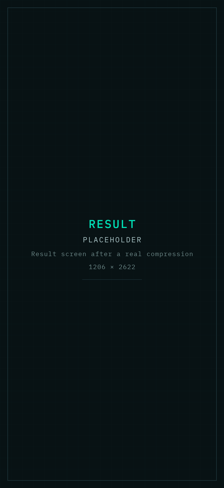
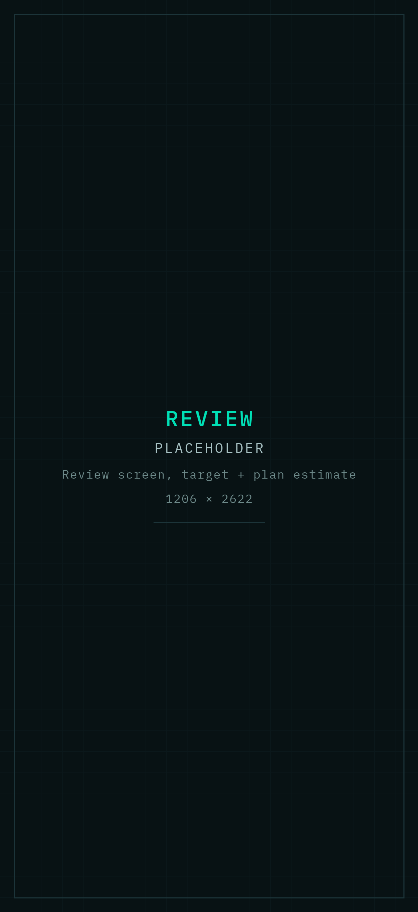

Video
Steps down a resolution ladder and solves for the bitrate that reaches your number. Targets land within about 4% in a single pass.
MOV · MP4 · M4VResolution ladderSingle-pass bitrate solve
iPhone · Utilities
Videos, PDFs, images and archives, compressed to the number a form or a mailbox demands — computed entirely on your iPhone.


112.4 MB 9.6 MB
Precision
Most compressors give you “low, medium, high” and let you find out afterwards. Local File Diet works the other way round: you name the size, and it solves for the settings that reach it — a resolution ladder and bitrate calculation for video, per-page analysis for PDFs.
Full range
Landing detail ×45
Formats
Each format gets an approach built for it, rather than one generic quality slider applied to everything.
Video
Steps down a resolution ladder and solves for the bitrate that reaches your number. Targets land within about 4% in a single pass.
MOV · MP4 · M4VResolution ladderSingle-pass bitrate solve
Recompresses image-heavy pages and leaves the text layer alone, so the document stays selectable and searchable.
Scanned & mixed documentsText stays selectableWarns before flattening
Image
Strips metadata, keeps transparency intact, and downsamples only as far as the target actually requires.
JPEG · PNG · HEIC/HEIF · TIFFAlpha channel preservedMetadata removed
Archive
Packs a finished batch into one ZIP on the device — useful when a portal wants a single attachment.
Local ZIP creationBatch outputNothing uploaded
Throughput
Pick several files at once and run them through in one pass. Save them individually, or pack the finished batch straight into a single ZIP.
Send a file straight in from Mail, Messages, Files or any other app. You do not have to open Local File Diet first, and the original stays where it was.

Privacy
Compression runs on your iPhone using the frameworks already in iOS. There is no server in the loop, which means there is no queue, no file-size cap, and no copy of your document sitting on someone else’s disk.
Files stay on the deviceThey leave only when you choose to share, save or export the result yourself.
On-device
No account, no sign-inInstall it and use it. There is nothing to register and no email to hand over.
Not required
No analytics or tracking SDKsNo advertising identifiers, no usage telemetry, no third-party frameworks watching.
None
Originals are never modifiedThe app works from a temporary copy and writes a new file alongside it.
Preserved
Local history you can clearRecent-compression details stay on the phone and can be wiped from settings.
Clearable
Apple’s own summary of what this app gathers about you.
How it works
Pick from Files or Photos, or send something in from the iOS share sheet.
Choose 25, 10 or 5 MB, or type the exact number the form is asking for, in MB or KB.
Share the result, save it to Files or Photos, or pack a whole batch into one ZIP.
Local File Diet is on the App Store for iPhone, running iOS 17 or later.
Local File DietCompress to an exact size